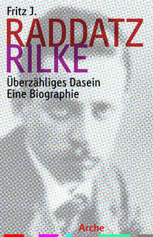

Byt niezmierzony
Nowe odczytanie biografii Rilkego oraz analizę jej wpływu na twórczość poety przynosi książka Fritza Raddatza «Rilke. Überzähliges Dasein. Eine Biographie». Publikacja ta wkrótce ukaże się w przekładzie na język polski.
Pisarz Hans Egon Holthusen zalicza «Elegie duinejskie» oraz «Sonety do Orfeusza», obok «Guseł» Valéry’ego oraz «Ulissesa» Jamesa Joyce’a, do epokowych arcydzieł literatury nowoczesnej, podczas gdy jedna z powiernic poety, księżna Marie von Thurn und Taxis, traktowała jego liryczne prezenty niczym słodycze, kwitując je słowami „urocze, zachwycające”. O jego najważniejszym dziele Elegii czytamy: „Ta cudowna książeczka dołączy do Pańskich pozostałych manuskryptów, przechowywanych w małej chińskiej szafie w bibliotece; sieneńska Madonna, słodka i rozmarzona, trzyma nad nimi straż”.
Bez wątpienia Rilke od samego początku narzucił sobie nieugięte zasady, które niczym spiżowe klamry spinają także jego sztukę. Wszelako nie ulega też wątpliwości, iż usiłował ich strzec, przybierając szlachetną pozę. Zatem odpowiedź na początkowe pytanie naszych poszukiwań „Kimże był ten człowiek” brzmi: dandysem, kuglarzem i geniuszem.